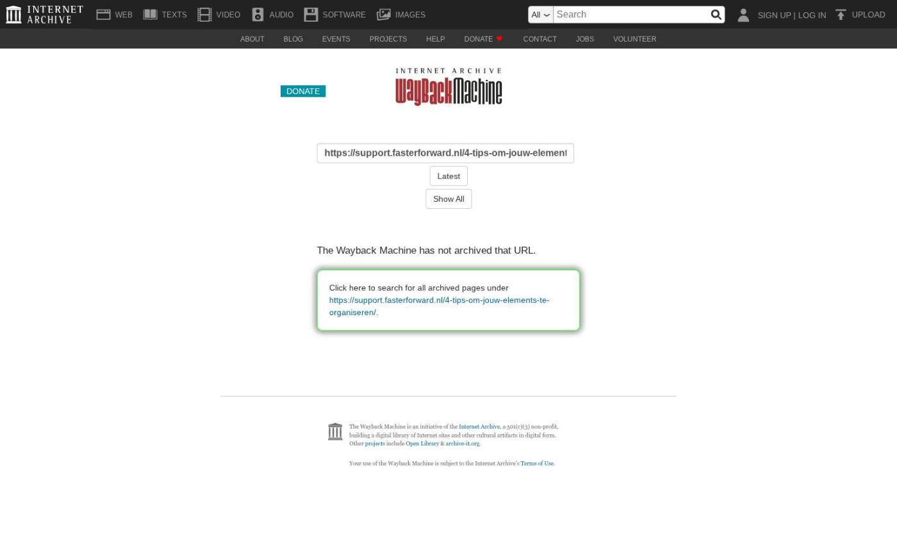

Openstaande facturen op betalingsoverzicht en koppeling MyTP openen vanuit schadeproduct

Tekstinhoud
Op woensdag 7 mei zijn Elements en eBlinqx weer verbeterd en uitgebreid met nieuwe features. Deze release bevat verbeteringen onder de motorkap en koppeling MyTP openen vanuit het schadeproduct. Ook is er een nieuwe feature alleen voor eBlinqx, namelijk openstaande facturen op één betalingsoverzicht.
eBlinqx Only
Openstaande facturen op één betalingsoverzicht
Elements en eBlinqx
Koppeling MyTP openen vanuit schadeproduct
Veranderingen in schademelding
Verzekeraar direct zichtbaar in schademelding
Veld 'Omschrijving' aangepast naar 'Wat is er gebeurd?'
Pop-up schademelding aanmaken
Verbeteringen onder de motorkap
Overige verbeteringen
eBlinqx Only
Openstaande facturen op één betalingsoverzicht
Let op: alleen beschikbaar in eBlinqx
Vanaf nu is het mogelijk om vanuit het dossier een betalingsoverzicht te maken van openstaande en geboekte facturen. Op deze manier kan je gemakkelijk facturen verrekenen met elkaar. Een voorbeeld:
De klant heeft een nieuwe auto gekocht. De verzekering van de oude auto wordt stopgezet en voor de nieuwe auto wordt een nieuwe verzekering aangevraagd. Vanuit de verzekering van de oude auto komt er restitutie. Deze restitutie kan dan verrekend worden met een openstaande factuur voor de nieuwe auto. Beide facturen neem je op in het betalingsoverzicht, zodat dit verrekend wordt met elkaar.
Het betalingsoverzicht kan je handmatig opstellen vanuit het dossier of via de workflow. Er wordt een PDF gegenereerd met daarin het betalingsoverzicht en de facturen die hierin zijn opgenomen. Maak je gebruik van Mollie dan wordt er een betalingslink gemaakt voor het bedrag van het betalingsoverzicht. Deze link komt op het betalingsoverzicht te staan, waardoor de klant door middel van de link kan betalen. De informatie op het betalingsoverzicht is op te halen door middel van tags, waaronder het betalingskenmerk. Wordt er een bankafschrift ingelezen met daarop een betaling met dit betalingskenmerk en het bedrag komt exact overeen dan wordt het bedrag afgeletterd tegen de openstaande facturen welke zijn opgenomen in het betalingsoverzicht. Zit er een verschil in het bedrag dan zal je het handmatig in de boekhouding moeten verwerken.
Let op: er moet een template voor het betalingsoverzicht zijn om deze aan te kunnen maken. Hier lees je meer over het aanmaken van het betalingsoverzicht en bijbehorende template.
Wil je dat wij deze template voor je aanmaken en/of dat we het aanmaken van het betalingsoverzicht inrichten in de workflows? Stuur dan een e-mail naar support-eblinqx@blinqx.tech
Elements en eBlinqx
Koppeling MyTP openen vanuit schadeproduct
Vanaf nu is het mogelijk om de koppeling met MyTP te openen vanuit het schadeproduct. In het product is een knop toegevoegd waarmee je direct een nieuwe vergelijking kunt opstarten of waarmee je naar de voorgaande vergelijkingen kunt gaan. Zo hoef je niet uit het product te gaan om de vergelijking in MyTP op te starten.
Veranderingen in schademelding
Verzekeraar direct zichtbaar in schademelding
In de schademelding kan je nu direct zien wie de verzekeraar is.
Veld 'Omschrijving' aangepast naar 'Wat is er gebeurd?'
Daarnaast heeft het veld 'Omschrijving' de naam 'Wat is er gebeurd?' gekregen. In dit veld kan je omschrijven wat er precies is gebeurd, waardoor de schade is ontstaan. In het veld 'Interne notities' kan je zaken omschrijven die belangrijk zijn voor je collega's om te weten.
Pop-up schademelding aanmaken
Wanneer je nu een schademelding aanmaakt, krijg je eerst een pop-up scherm waarin je de schademelding/tijd, polis en eventueel object selecteert. Door op 'Volgende' te klikken word je doorgeleid naar het volgende scherm om de schademelding verder aan te maken. Deze aanpassing is gedaan vanwege toekomstige ontwikkelingen van de software.
Verbeteringen onder de motorkap
De softwaretechnieken van Elements en eBlinqx zijn weer vernieuwd. We hebben hier verdere verbeteringen op doorgevoerd. Ondanks dat je hier niets van merkt, is deze vernieuwing erg belangrijk.
Hierdoor kunnen we namelijk nieuwe innovaties blijven implementeren, omdat we gebruikmaken van de nieuwste software. Bovendien blijft de veiligheid gewaarborgd. Dit geldt zowel voor Elements en eBlinqx als voor alle koppelingen en exports, zoals klantportalen, adviespakketten, Excel en verbindingen met geldverstrekkers en verzekeraars.
Overige verbeteringen
Het kon voorkomen dat een afbeelding niet zichtbaar was in de e-mail. De techniek hierachter is verbeterd, waardoor de afbeelding wordt getoond
De rapportage CRM – Verzekeringsportefeuille is uitgebreid met de kolom 'Premievervaldatum'. Wil je deze kolom zien, zet deze dan aan in Rapportagebeheer
In Fastlane is er een functionaliteit toegevoegd waarmee je gemakkelijk de gegevens van Veilig Ophalen uit eBlinqx kunt halen
De subadministratie 'Doorbelasting deelnemers' is toegevoegd aan de boekhoudmodule
eBlinqx/Elements herkent nu of het bedrag op het ingelezen bankafschrift een stornering betreft. Betreft het een stornering dan wordt deze niet gematcht aan een openstaand bedrag
Geplaatst op 6 mei 2025
Laatste 5 releasenotes
Voorbereidingen op HDN 26 en verbeteringen PortefeuilleSignalen »
Nog meer data en documenten vergelijken »
Gemakkelijk data en documenten vergelijken »
Verbeteringen boekhouding en facturatie »
Verbeteringen gespreksopname en onder de motorkap »